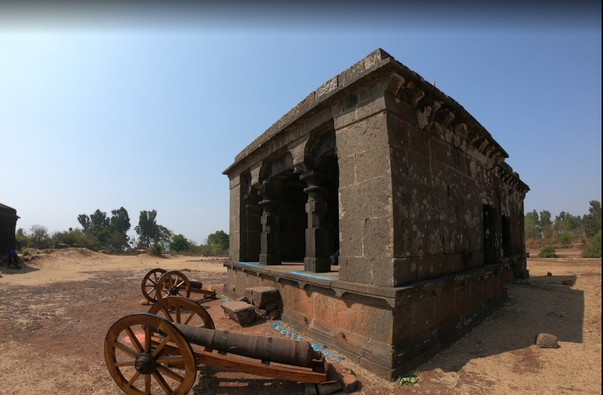

पावनगड किल्ला १६७३ मध्ये छत्रपती शिवाजी महाराजांनी बांधला . पावनगड हा कोल्हापूर जिल्यातील एक डोंगरी किल्ला आहे.हा किल्ला पन्हाळगड किल्या वरती पहारा देण्यासाठी बाधण्यात आला.पावनगड किल्ला हा पन्हाळगडाचा जुळा किल्ला असून पन्हाळगड व पावनगड हे किल्ले फक्त एका दरीमुळे वेगळे झाले आहेत.
या किल्याला घनदाट जंगलाने व्यापला असून येते वाघ,बिबट्या,विषारी साप,ससा ,पक्षी मोठ्या प्रमाणात दिसतात.
